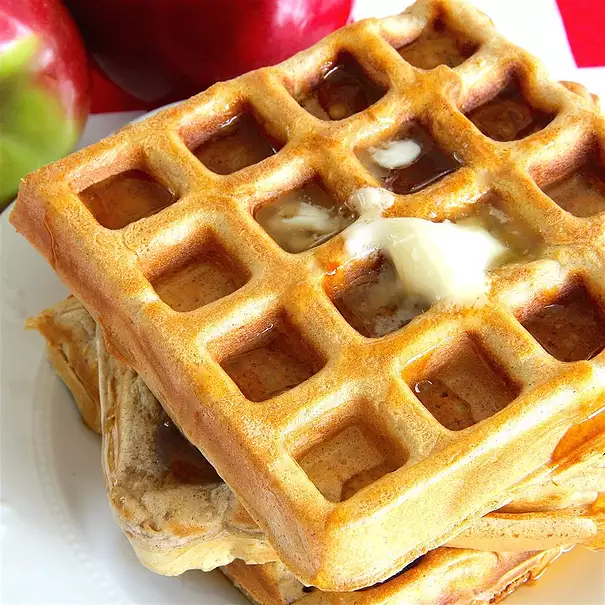

Waffle

Description
A nice waffle for a special apple cinnamon treat!
Ingredients
- 4 cups all-purpose flour
- 1 teaspoon cream of tartar
- 1 teaspoon baking soda
- 2 1/2 tablespoons ground cinnamon
- 3 tablespoons white sugar
- 3 cups water
- 1 3/4 cups dry milk powder
- 2 apples - peeled, cored and finely chopped
Steps
- Preheat a lightly greased waffle iron.
- In a large bowl, mix flour, cream of tartar, baking soda, cinnamon, and sugar. Mix the water, milk powder, and eggs in medium bowl, and blend into the flour mixture until smooth. Fold in the apples.
- Ladle batter into the preheated waffle iron. Cook waffles until golden brown.